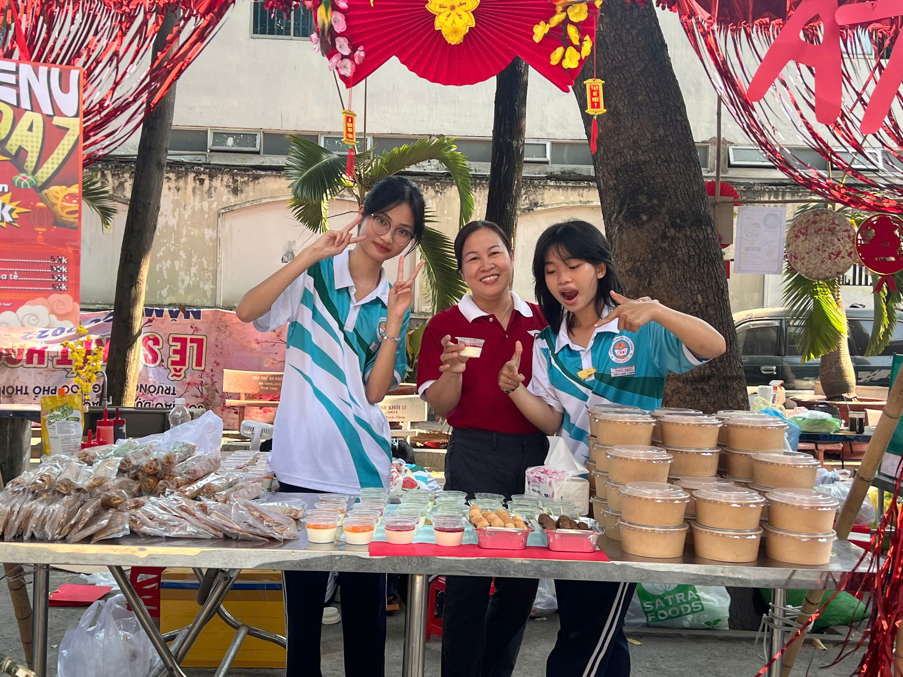

ABOUT 12A7
OUR JOURNEY
2023-2024
GVCN: Trần Lan Phương
Thành tích nổi bật


WE CREATE
US
10A7 có thể nói đây chính là một sự khởi đầu suôn sẻ. Bạn mới, trường mới, môi trường học tập hoàn toàn mới trước những thanh thiếu niên còn non nớt ngày đầu nhập học. Ai cũng bồi hồi, bối rối với những thủ tục. Nào là sơ yếu lý lịch, rồi còn những giấy tờ khác nữa. Nhưng mọi người ai cũng vui vẻ, hứng khởi. Đặc biệt là cô giáo của chúng em Cô Lan Phương. Thực sự cô rất tận tâm giản dạy chúng em rất chu đáo và tỉ mỉ, đối với chúng em cô không chỉ là cô giáo mà còn là một người mẹ thứ hai của bọn em. Và cho ai chưa biết thì năm này Hồng Phúc đang đứng vai trò làm lớp ttrưởng.
2024-2025
GVCN: Nguyễn Thanh Ngọc Thủy
Thành tích nổi bật


WE MAKE
FRIEND
Năm hai trung học phổ thông mọi thứ dường như dần quen thuộc với mỗi người học sinh chúng em hơn. Chúng em đã thực sự có những người bạn tốt và đồng hành cùng nhau trên con đường học tập. Đây có lẽ chính là năm học đáng nhớ nhất của lớp chúng em. Chúng em được khá là may mắn khi được đồng hành cùng với cô Thủy. Điều đầu tiên mà bọn em ngạc nhiên về cô có lẽ là môn dạy. Chúng em tưởng mỗi giáo viên chỉ đảm nhận một môn. Nhưng không cô thì khác, cô đảm nhận hai môn là môn Lý và môn Công Nghệ. Cô thật sự rất nghiêm túc nhưng lại có đôi phần dễ hương. Chính nhờ những điều ấy, mà đã hình thành nên một tập thể lớp 12A7 như bây giờ.
2025-2026
GVCN: Nguyên Thúy Vinh
Thành tích nổi bật


WE CREATE
MEMORIES
12A7 là một tập thể đoàn kết, năng động và đầy sáng tạo. Trải qua hai năm học, thiệt sự chúng em đã gắn bó với nhau hơn và tạo cho nhau rất nhiều kỉ niệm đẹp. Năm nay lớp em được vinh dự đồng hành với cô Thúy Vinh - giáo viên bộ môn ngoại ngữ. Chúng em đã có cơ hội đồng hành với cô trong năm lớp 11 rồi nên lên 12 chẳng mấy gì là xa lạ. Cô vẫn như vậy, Hiền lành nhân hậu và luôn quan tâm đến mỗi người chúng em từng li từng tí. Từ những việc nhỏ nhặt đến những việc lớn cô đều quan tâm đến mỗi người chúng em. Và trong năm cuối cấp điều ấy có trở nên rõ ràng hơn thông qua việc giúp tụi em có những định hướng tương lai, tư vấn và hộ trợ em. Mong sao mai sau lớp chúng ta vẫn mãi như vậy, vẫn nhớ đến nhau dù có đi đâu chăng nữa.